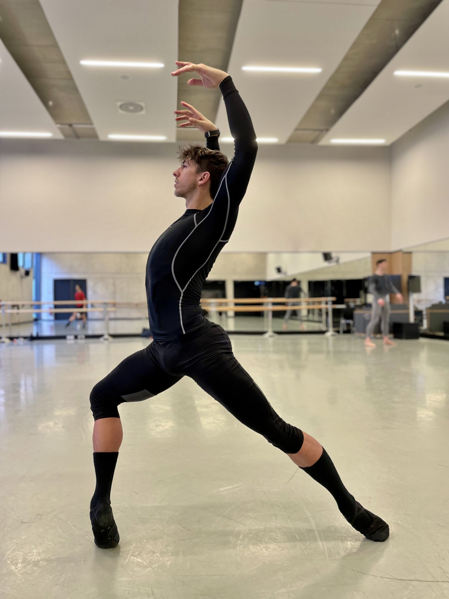

Referentes de Ciencia, Arte
En esta sección, te presentamos una breve biografía de 3 referentes uruguayos en diferentes áreas del conocimiento.
Te invitamos a leerlas para conocer algunos de los desafíos que tuvieron que superar para alcanzar sus metas.
Amalia Dutra
Nacida en Colonia, Uruguay, integró desde 1993 el equipo que descifró el genoma humano en el laboratorio del National Human Genome Institute en Washington, Estados Unidos.
Se desempeñó como Directora del laboratorio Central de Citogenética y Microscopía Confocal (Cytogenetic and Confocal Microscopy Core) del NHGRI (Instituto Nacional de Investigaciones del Genoma Humano).
Es Licenciada en Oceanografía Biológica en la UdelaR (1983), también trabajó en el Instituto Clemente Estable y ejerció docencia en la Facultad de Medicina.
Fue encargada de analizar la información que surgió de la decodificación del genoma y tuvo como tarea específica identificar qué función cumple cada uno de los genes.
La Dra. Amalia Dutra declara que el genoma humano debe ser estudiado para beneficio de todos y no para el lucro de pocos.
Nelson López
Tenía nueve años cuando empezó a estudiar piano. Expresarse y aprender sobre el arte, sobre todo el clásico, siempre fue una inquietud. Luego descubrió que le gustaba más moverse que hacer música y apareció el ballet.

“Fui con mi madre, me iba a matricular en folclore en la escuela de danza, pero en ese momento en que me preguntan, ¿querés folclore o ballet?, contesto ballet. Mi mamá no entendió nada, pero me apoyó”,
Recuerda Nelson López, el bailarín uruguayo que brilla como solista en la compañía Deutsche Oper Am Rhein de Alemania.
Patricia Pita
Con tan solo 34 años, la uruguaya Patricia o “Pato” Pita formó parte del primer equipo en la historia del Dakar liderado por mujeres, junto con la corredora española Laila Sanz. Esto, luego de haberse convertido también en la primera mujer de su país en competir en el Rally Dakar.
Los cupos que ocupan las mujeres en este tipo de deportes suelen ser reducidos, especialmente cuando se trata de competencias del calibre del Rally Dakar.
Sin embargo, cada año hay más mujeres que representan a sus países. De hecho, en la edición pasada del rally, se logró la mayor participación femenina en la historia de la competencia. De los 632 corredores, 54 fueron mujeres.
Pita resalta que queda mucho por mejorar.
“Más allá de que la participación de la mujer viene creciendo, en las grandes categorías, tanto en la Fórmula uno, como el World Touring Car Cup (WTCR), el World Rally Championship, el Campeonato Europeo de Rally, incluso el Campeonato Español de Rally, prácticamente no hay mujeres pilotos.”
Para Pita, lo más importante es darse cuenta de que mujeres como ella son grandes referentes para miles de niñas y adolescentes, lo cual implica una gran responsabilidad a la hora de demostrar que una mujer sí puede desarrollar una carrera profesional en este tipo de deportes.
Patricia nos cuenta curiosidades de su travesía: